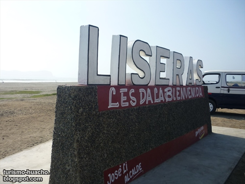
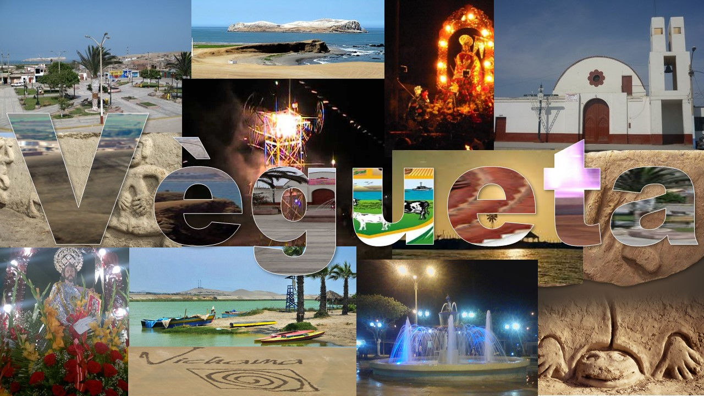

I.E. Fray Melchor Aponte
Esta página está dedicada a los estudiantes y docentes del colegio I.E. Fray Melchor Aponte de Vegueta, promoviendo el conocimiento y amor por nuestra rica herencia cultural local.
"Conocer nuestras raíces es el primer paso para valorar nuestro futuro"
La Legendaria Ciudad Sagrada de Vichama

La Cuna de la Civilización Americana
En nuestro querido distrito de Vegueta se encuentra uno de los tesoros arqueológicos más importantes del mundo: la Ciudad Sagrada de Vichama.
Descubierta por la arqueóloga Ruth Shady, Vichama forma parte de la Civilización Caral, la más antigua de América. Aquí, hace más de 5,000 años, nuestros ancestros desarrollaron:
- Agricultura avanzada - Cultivos de frijol, calabaza y algodón
- Arte textil sofisticado - Los primeros textiles de América
- Música ceremonial - Flautas de hueso y caracolas
- Arquitectura monumental - Pirámides y plazas circulares
- Sistema de quipus - Registro de información
Ubicación: A solo 3 km del centro de Vegueta
Horarios: Martes a domingo, 9:00 AM - 4:00 PM
Entrada: Estudiantes S/. 5, Adultos S/. 15
Invitación a vichama
Recreación de instrumentos encontrados en las excavaciones
Gastronomía Tradicional de Vegueta
Nuestra cocina local combina tradiciones ancestrales con la abundancia del mar y los frutos de la tierra huaurina.

Ceviche de Vegueta
Especialidad local: Preparado con pescado fresco de nuestras playas
Ingredientes tradicionales:
- Pescado lorna - Capturado en Vegueta
- Limones de Huaura - Los más ácidos de la región
- Camote de Ámbar - Dulce y cremoso
- Choclo serrano - De granos grandes
- Ají limo norteño - Para el toque picante
Otros Platos Tradicionales
- Seco de frijoles con arroz y yuca
- Chicharrón de pescado con salsa criolla
- Sudado de mero con camotes
- Arroz con mariscos estilo Vegueta
- Humitas verdes con queso fresco
- Mazamorra morada con arroz con leche
Bebidas tradicionales:
- Chicha de jora casera
- Emoliente de hierbas locales
- Agua de cebada con limón
Aprende a preparar el Ceviche de pato en Vegueta
Tutorial paso a paso con ingredientes locales
Dónde encontrar ingredientes frescos:
- Mercado de Vegueta - Centro del distrito
- Puerto pesquero - Pescado fresco diario
- Campos de Ámbar - Camotes y verduras
- Feria dominical - Productos orgánicos locales
Playas y Atractivos Turísticos de Vegueta
Nuestras Hermosas Playas
Playa Principal de Vegueta
- Extensión: 2 km de arena fina
- Actividades: Pesca, surf para principiantes
- Servicios: Restaurantes, baños, estacionamiento
- Acceso: Directo desde el pueblo
Playa Los Vilos
- Característica: Ideal para recolección de mariscos
- Fauna marina: Cangrejos, pulpos, caracolas
- Mejor época: Marea baja (consultar tabla)
Otros Atractivos Turísticos
Centro Histórico
Camina por nuestras calles coloniales y visita:
- Iglesia San Pedro de Vegueta (siglo XVI)
- Casa de la Cultura
- Plaza de Armas con sus jardines
- Museo Municipal
Ruta Agrícola
Conoce nuestros campos productivos:
- Cultivos de algodón Pima
- Campos de maíz amarillo
- Huertos de frutales tropicales
- Crianza de patos criollos
Guía Turística Completa - Fin de Semana en Vegueta
Plan perfecto para conocer todos los atractivos de nuestro distrito en 3 días.
| Día | Horario | Actividad | Lugar | Duración | Costo | Recomendación |
|---|---|---|---|---|---|---|
| VIERNES | 08:00 AM | Arribo y desayuno | Restaurante "El Pescador" | 1 hora | S/. 15 | Probar el pan con chicharrón |
| 09:30 AM | Visita a Vichama | Zona arqueológica | 3 horas | S/. 15 | Llevar sombrero y agua | |
| 01:00 PM | Almuerzo tradicional | Casa Doña María | 1.5 horas | S/. 25 | Pedir el sudado de mero | |
| 03:00 PM | Tour Centro Histórico | Plaza de Armas | 2 horas | Gratis | Visitar la iglesia colonial | |
| SÁBADO | 07:00 AM | Pesca artesanal | Puerto de Vegueta | 4 horas | S/. 40 | Experiencia con pescadores |
| 12:00 PM | Preparar ceviche | Playa principal | 2 horas | S/. 30 | Con el pescado capturado | |
| 03:00 PM | Relajación en playa | Playa Los Vilos | 3 horas | Gratis | Buscar caracolas y cangrejos | |
| 07:00 PM | Cena y folclore | Restaurant "Tradición" | 2 horas | S/. 35 | Show de danzas típicas | |
| DOMINGO | 08:00 AM | Ruta agrícola | Campos de Ámbar | 3 horas | S/. 20 | Tour en bicicleta disponible |
| 12:00 PM | Feria dominical | Plaza del Mercado | 2 horas | S/. 25 | Comprar productos locales | |
| 03:00 PM | Despedida | Mirador El Faro | 1 hora | Gratis | Vista panorámica del distrito |
Costo total del tour: S/. 205 por persona (incluye comidas y actividades)
Reservas: turismo@munivegueta.gob.pe
WhatsApp: +51 987 654 321
Hospedaje recomendado: Hostal "Vista al Mar" - S/. 60 por noche
Examen de Conocimientos Culturales - Vegueta y Vichama
Demuestra cuánto sabes sobre nuestro querido distrito y su rica herencia cultural.
Instrucciones del Examen:
- Completa todas las preguntas obligatorias
- Este examen no tiene límite de tiempo
- Puedes consultar la información de la página
- Al finalizar recibirás un certificado de participación
- Los resultados serán enviados a tu profesor